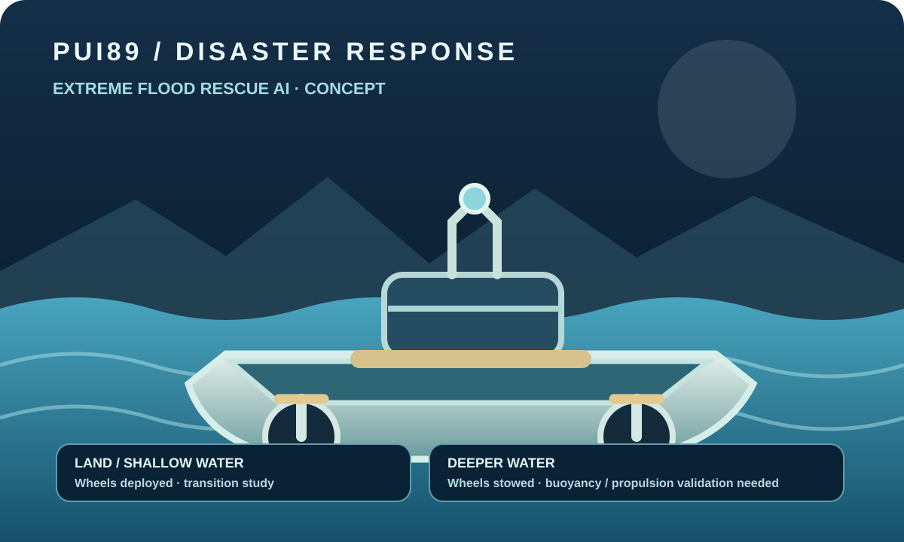

Disrupted access
Flooding can isolate communities, block roads and damage communications.
A developing AI decision-support concept for flood situational awareness, hazard mapping and human-supervised assistance planning, with proposed land-and-water rescue platforms.

Software checks and scenario/report tooling are under development. The 0–15 m flood range is a scenario/design target only. No validated flood-depth operating envelope, navigation, buoyancy, payload, rescue or field performance is claimed.
Flooding can isolate communities, block roads and damage communications.
Current, debris, water depth, visibility and structural damage can change quickly.
Technology must support trained rescue teams, not create new hazards or replace their judgement.
Combine permitted visual observations, map context and environmental inputs; track freshness and uncertainty; produce reviewable hazard summaries and assistance priorities for trained responders.
Study aerial reconnaissance and a boat-shaped amphibious platform with retractable wheels for suitable land/shallow-water transitions. Passenger/animal space, payload and propulsion remain unverified design requirements.
This project is still in development. It is not a finished product.
Use ISO 12100 as a machinery risk-assessment reference where applicable and the NIST AI Risk Management Framework for AI risk management. Applicable marine, electrical, radio, occupational and emergency-response requirements must be identified by qualified specialists for the actual platform and jurisdiction.
These are references, not certification. No person or animal should be carried in an experimental platform before independent engineering review and staged safety validation.
Emergency responders, hydrology and civil engineers, disaster researchers, marine engineers and robotics specialists can help define realistic scenarios and safety gates.
Discuss support or collaborationOpen project repository ↗